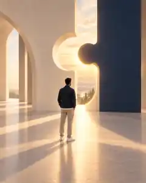

سفر
جب ہر چیز سوال بننے لگی
کہانی، باب در باب۔
میں ان سوالوں کے باہر کھڑا کوئی مبصر نہیں، خود اسی سفر کا ایک طالب علم ہوں۔
باب اوّل اس دور سے شروع ہوتا ہے جب زندگی کے مختلف حصے ایک جگہ آتے ہوئے محسوس ہونے لگے۔ نئی تحریریں اسی وقت یہاں شامل ہوں گی جب وہ واقعی لکھی جائیں گی۔

باب اوّل · تحریر 01
مجھے لگا شاید مجھے اپنی جگہ مل گئی ہے
ایک عرصے تک میں ایک کے بعد ایک کورس میں داخلہ لیتی رہی۔
تحریر 01 پڑھیے ←